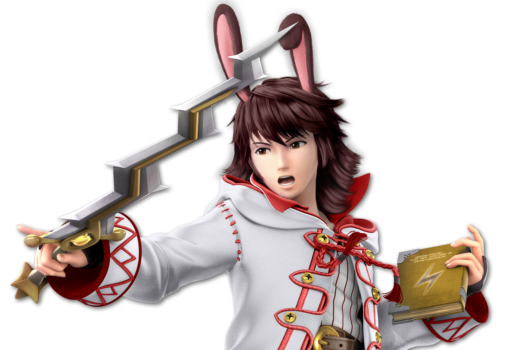
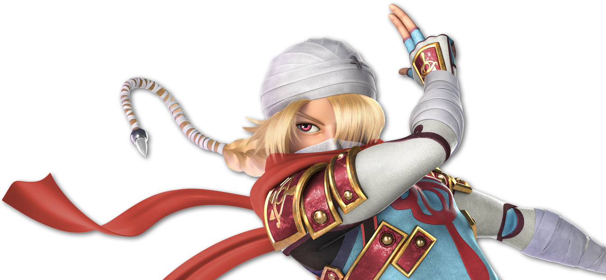

this is the ass test
Daigo (Robin, Skin 7), He/Him, Co-Host
“???????????”
Status: ???
this is another ass test
Tera (Sheik, Skin 8), He/It, Host
“Daigo’s Better Half”
Status: Busy Busy Busy
this is the cpuk test
Prism (Pokémon Trainer, Skin 4), She/Her, Host/Team Charm
“Little Miss Rainbow”
Status: :)
this is another cpuk test

this is a test for prism
this is a test for cobalt
this is a test for chartreuse
this is a test for crimson
this is a test for peppermint
this is a test for cinder